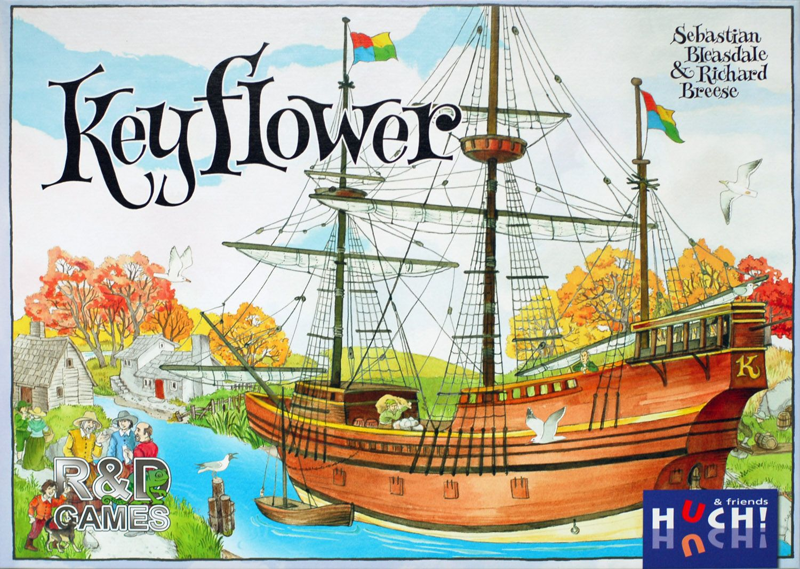

HU004
大五月花號
遊戲人數：２－６人
遊戲時長：９０－１２０分鐘
建議年齡：１３歲以上
產品介紹
大五月花號是一款由２到６位玩家共同進行四輪的遊戲。
每一輪都代表其中一個季節：春天、夏天、秋天，最終迎來冬天。
每位玩家都以一片「家園」板塊和一個由藍色、紅色以及黃色工人隨機組成的團隊開始遊戲，而你必須使用相同顏色的工人來競標板塊以擴展各自的村莊。
玩家不只能使用自己的村莊板塊，你也可以利用其他玩家的或是新拿出來競標的板塊。
只需要將工人放到相對應的板塊上，就能夠取得資源、技術、額外的工人以及勝利分數。
在春天、夏天，以及秋天裡，會有更多的工人登上大五月花號和她的姊妹船們，其中有些工人還擁有開採鐵礦、石頭和木材等資源的技術。
到了冬天，玩家們會選出用來參與競標的村莊板塊，而它們將會為特定的資源、技術，以及工人組合提供勝利分數。
大五月花號將會為玩家們帶來許多不同的挑戰，而且每場遊戲也會因為村莊板塊的組合而有著不同的體驗。
在遊戲過程中，玩家們需要好好把握機會，並且善用各種資源、運輸和升級的能力、技術，以及工人。